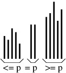
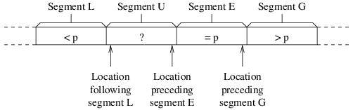

A split sort operates by splitting the array into three parts:
This arrangement is illustrated in the following figure.

To complete the sort, it then sorts the two unsorted parts. Note that because the second part is nonempty, each of the two unsorted parts is smaller than the original data set; hence, the algorithm will always make progress.
The various implementations of a split sort are collectively known as quick sort. They differ in how many elements are placed in the middle part (only one element or all elements equal to the pivot), how the pivot is chosen, how the elements are partitioned into three parts, and how the two sub-problems are sorted. We will examine only two variations, which differ in how the pivot element is chosen.
Let’s start with how we do the partitioning. Let p denote the pivot element. Because most of the split sort implementations use recursion to complete the sort, we’ll assume that we are sorting a portion of an array. At each stage of the partitioning, the array portion we are sorting will be arranged into the following four segments:
Initially, segments L, E, and G will be empty, and each iteration will reduce the size of segment U. The partitioning will be finished when segment U is empty. We will need three local variables to keep track of where one segment ends and another segment begins, as shown in the following figure:

We have worded the descriptions of the three local variables so that they make sense even if some of the segments are empty. Thus, because all segments except U are initially empty, the location following segment L will initially be the first location in the array portion that we are sorting, and the other two variables will initially be the last location in this portion. We then need a loop that iterates as long as segment U is nonempty — i.e., as long as the location following segment L is no greater than the location preceding segment E. Each iteration of this loop will compare the last element in segment U (i.e., the element at the location preceding segment E) with p. We will swap this element with another depending on how it compares with p:
Once this loop completes, the partitioning will be done. Furthermore, we can determine the two parts that need to be sorted from the final values of the local variables.
The first split sort implementation we will consider is fairly straightforward, given the above partitioning scheme. If we are sorting more than one element (otherwise, there is nothing to do), we will use as the pivot element the first element of the array portion to be sorted. After partitioning, we then sort the elements less than the pivot using a recursive call, and sort the elements greater than the pivot with another.
Though we won’t give an analysis here, the above algorithm runs in $O(n^2)$ time in the worst case, where $n$ is the number of elements being sorted. However, as we saw with insertion sort, the worst-case running time doesn’t always tell the whole story. Specifically, the expected running time of quick sort (this implementation and others) on random arrays is in $O(n \lg n)$.
However, we don’t often need to sort random data. Let’s therefore take a closer look at what makes the worst case bad. In some ways this algorithm is like merge sort — it does two recursive calls, and the additional work is proportional to the number of elements being sorted. The difference is that the recursive calls in merge sort are both on array portions that are about half the size of the portion being sorted. With this quick sort implementation, on the other hand, the sizes of the recursive calls depend on how the first element (i.e., the pivot element) compares to the other elements. The more elements that end up in one recursive call, the slower the algorithm becomes. Consequently, the worst case occurs when the array is already sorted, and is still bad if the array is nearly sorted. For this reason, this is a particularly bad implementation.
Before we look at how we can improve the performance, we need to consider one other aspect of this implementation’s performance. For a recursive method, the amount of data pushed on the runtime stack is proportional to the depth of the recursion. In the worst cases (i.e., on a sorted array), the recursion depth is $n$. Thus, for large $n$, if the array is sorted or nearly sorted, a StackOverflowException is likely.
The most important thing we can do to improve the performance, in terms of both running time and stack usage, is to be more careful about how we choose the pivot element. We want to choose an element that partitions the data elements roughly in half. The median element (i.e., the element that belongs in the middle after the array is sorted) will therefore give us the optimal split. It is possible to design an $O(n \lg n)$ algorithm that uses the median as the pivot; however, the time it takes to find the median makes this algorithm slower than merge sort in practice. It works much better to find a quick approximation for the median.
The main technique for obtaining such an approximation is to examine only a few of the elements. For example, we can use median-of-three partitioning, which uses as its pivot element the median of the first, middle, and last elements of the array portion we are sorting. An easy way to implement this strategy is to place these three elements in an array of size 3, then sort this array using insertion sort. The element that ends up at location 1 is then the used as the pivot.
We can improve on the above strategy by doing a case analysis of the three values. If we do this, we don’t need a separate array — we just find the median of three values, $a$, $b$, and $c$, as follows:
The above algorithm is quite efficient, using at most three comparisons and requiring no values to be copied other than the result if we implement it in-line, rather than as a separate method (normally an optimizing compiler can do this method inlining for us). It also improves the sorting algorithm by tending to make the bad cases less likely.
This version of quick sort gives good performance most of the time, typically outperforming either heap sort or merge sort. However, it still has a worst-case running time in $O(n^2)$ and a worst-case stack usage in $O(n)$. Furthermore, it is unstable and does not perform as well as insertion sort on small or nearly sorted data sets. In the next section, we will show how quick sort can be combined with some of the other sorting algorithms to address some of these issues, including the bad worst-case performance.